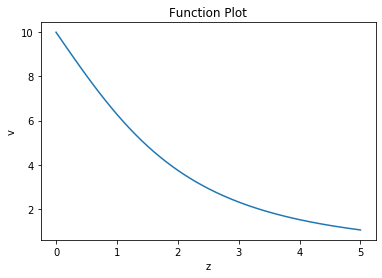

---
redirect_from:
  - "/tools/python-basics/1-getting-started"
interact_link: content/Tools/Python-Basics/1-Getting-Started.ipynb
kernel_name: python3
kernel_path: content/Tools/Python-Basics
has_widgets: false
title: |-
  Getting Started
pagenum: 18
prev_page:
  url: /Tools/Python-Basics/0-Anatomy-Of-A-Program.html
next_page:
  url: /Tools/2-Collections-Numpy-Slicing.html
suffix: .ipynb
search: function input numpy v t python using values array matplotlib program ball position g results compute laws h s want point z simple programming programs concepts mathematical available data string output motion large frac m given following strategy above evaluate comments code indicate single arrays basic weeks environment variables also used packages functions engineering complete documentation org powerful both hello world our very involves printing console trajectory height calculate seconds employ variable initial velocity return right units calculations formatting e next sqrt value corresponding range plot getting started tasks below explore class examples inteded demonstrate working development introduce widely provides

comment: "***PROGRAMMATICALLY GENERATED, DO NOT EDIT. SEE ORIGINAL FILES IN /content***"
---

    <main class="jupyter-page">
    <div id="page-info"><div id="page-title">Getting Started</div>
</div>
    <div class="jb_cell">

<div class="cell border-box-sizing text_cell rendered"><div class="inner_cell">
<div class="text_cell_render border-box-sizing rendered_html">
<h1 id="Getting-Started---Some-Simple-Programming-Tasks">Getting Started - Some Simple Programming Tasks<a class="anchor-link" href="#Getting-Started---Some-Simple-Programming-Tasks"> </a></h1><p>Below, we explore some basic Python programs using concepts from this week's class.  These examples are inteded to demonstrate basic programming concepts, working with the Python development environment, and using variables in programs.</p>
<p>We also introduce <code>numpy</code> and <code>matplotlib</code>, two widely used Python packages. <code>numpy</code> provides a host of mathematical functions and array/matrix operations, and is used in most science and engineering applications written in Python.  Complete documentation for <code>numpy</code> is available at <a href="https://numpy.org/">https://numpy.org/</a>. <code>matplotlib</code> is a simple, yet powerful, plotting/charting package for visualizing data.  Complete documentation for <code>matplotlib</code> is available at <a href="https://matplotlib.org">https://matplotlib.org</a>.  Both packages are open source and freely available.</p>
<h2 id="Hello,-World!">Hello, World!<a class="anchor-link" href="#Hello,-World!"> </a></h2><p>Our first program is very simple, and involves printing the string <em>"Hello World"</em> to the Python console.</p>
<p>Programming concepts demonstrated:</p>
<ol>
<li>Interacting with the Python environment</li>
<li>using the "string" data type</li>
<li>console output</li>
</ol>

</div>
</div>
</div>
</div>

<div class="jb_cell">

<div class="cell border-box-sizing code_cell rendered">
<div class="input">

<div class="inner_cell">
    <div class="input_area">
<div class=" highlight hl-ipython3"><pre><span></span><span class="nb">print</span><span class="p">(</span> <span class="s2">&quot;Hello, World!&quot;</span><span class="p">)</span>
</pre></div>

    </div>
</div>
</div>

</div>
</div>

<div class="jb_cell">

<div class="cell border-box-sizing text_cell rendered"><div class="inner_cell">
<div class="text_cell_render border-box-sizing rendered_html">
<h2 id="Compute-the-Trajectory-of-a-Ball-using-the-Laws-of-Motion">Compute the Trajectory of a Ball using the Laws of Motion<a class="anchor-link" href="#Compute-the-Trajectory-of-a-Ball-using-the-Laws-of-Motion"> </a></h2><p>This problem involves computing a vertacal position (height) of a thrown ball based on the laws of motion.  These laws are:</p>
<p>$\large h = h_0 + v_0 t - \frac{1}{2} g t^2 $</p>
<p>$\large v = v_0 - g t $</p>
<p>where:
$ g = 9.8 \frac{m}{s^2} $, the acceleration due to gravity.</p>
<p><strong>We want to compute, for a given time t, the position and speed of the ball at that point in time.</strong>  Assume the following intial conditions:</p>
<p>$ h_0 = 1.2 m $
$ v_0 = 5.4 m/s $</p>
<p>Calculate your results for t = 0.5 seconds, and t=2 seconds.</p>
<h3 id="The-Strategy">The Strategy<a class="anchor-link" href="#The-Strategy"> </a></h3><p>To compute this trajectory, we employ the following strategy:</p>
<ol>
<li><p>Define a function capturing the Laws of Motion above.  This function will take as input the following:</p>
<ul>
<li>a time variable (<code>t</code>) indicating the point in time to evaluate,</li>
<li>the initial position (height) of the ball (<code>h0</code>) </li>
<li><p>the initial velocity (in the vertical direction) of the ball (<code>v0</code>)</p>
<p>The function should return the position and velocity for the given input above.</p>
</li>
</ul>
</li>
<li><p>Call this function to determine the position and velocities for the two times given above.</p>
</li>
<li><p>Report the results.</p>
</li>
</ol>
<p>Note the use of <strong>comments</strong> to document your code - <strong>any text to the right of a '#' symbol is considered a comment and is ignored by the Python interpreter</strong>.  Use comments liberally throughout your program to indicate variable meanings, program logic, and other aspects of your program in "human-friendly", readable forms.  You will thank yourself when you look at your code a few weeks from now and have to remember what you did.</p>
<p>For most engineering problems, units are critical to your calculations.  It is very helpful, and will save you a lot of headaches trying to debug faulty code, to indicate units associated with your variables and calculations in comments at the point of definition.</p>
<p><strong>When printing your output, we use appropriate formatting!</strong> e.g. for floating point (real) numbers, indicate a precision using string formatting, e.g.</p>
<p><code>print( "My Output is: {}, {:.2f}".format(someInteger, someRealNumber) )</code></p>

</div>
</div>
</div>
</div>

<div class="jb_cell">

<div class="cell border-box-sizing code_cell rendered">
<div class="input">

<div class="inner_cell">
    <div class="input_area">
<div class=" highlight hl-ipython3"><pre><span></span><span class="c1"># Program for calculating hieght and velocity of a ball thrown vertically in the air</span>

<span class="c1"># first, define function that computes position, velocity</span>
<span class="c1"># t = time to evaluate</span>
<span class="c1"># h0 = initial height</span>
<span class="c1"># v0 = initial vertical velocity</span>
<span class="k">def</span> <span class="nf">LawOfMotion</span><span class="p">(</span><span class="n">t</span><span class="p">,</span><span class="n">h0</span><span class="p">,</span><span class="n">v0</span><span class="p">):</span>
    <span class="n">g</span> <span class="o">=</span> <span class="mf">9.8</span>    <span class="c1"># m/s/s</span>
    <span class="c1"># calculate height</span>
    <span class="n">h</span> <span class="o">=</span> <span class="n">h0</span> <span class="o">+</span> <span class="p">(</span><span class="n">v0</span><span class="o">*</span><span class="n">time</span><span class="p">)</span> <span class="o">-</span> <span class="mf">0.5</span><span class="o">*</span><span class="n">g</span><span class="o">*</span><span class="n">time</span><span class="o">**</span><span class="mi">2</span> <span class="c1"># m</span>
    <span class="c1"># calculate velocity</span>
    <span class="n">v</span> <span class="o">=</span> <span class="n">v0</span> <span class="o">-</span> <span class="n">g</span><span class="o">*</span><span class="n">time</span>                    <span class="c1"># m/s</span>
    <span class="k">return</span> <span class="n">h</span><span class="p">,</span><span class="n">v</span>    <span class="c1"># return both h and v to the caller</span>
    
    
<span class="c1"># ----- main program -----</span>
    
<span class="c1"># define initial conditions, constants</span>
<span class="n">h0</span> <span class="o">=</span> <span class="mf">1.2</span>   <span class="c1"># meters</span>
<span class="n">v0</span> <span class="o">=</span> <span class="mf">5.4</span>   <span class="c1"># m/s</span>
<span class="n">time</span> <span class="o">=</span> <span class="mf">0.5</span>   <span class="c1"># second</span>
<span class="n">h</span><span class="p">,</span><span class="n">v</span> <span class="o">=</span> <span class="n">LawOfMotion</span><span class="p">(</span><span class="n">time</span><span class="p">,</span><span class="n">h0</span><span class="p">,</span><span class="n">v0</span><span class="p">)</span> 
<span class="nb">print</span> <span class="p">(</span> <span class="s2">&quot;After </span><span class="si">{}</span><span class="s2"> seconds,  Velocity=</span><span class="si">{:.2f}</span><span class="s2">m/s, Height=</span><span class="si">{:.2}</span><span class="s2">m&quot;</span><span class="o">.</span><span class="n">format</span><span class="p">(</span> <span class="n">time</span><span class="p">,</span> <span class="n">v</span><span class="p">,</span> <span class="n">h</span><span class="p">))</span>

<span class="c1"># repeat, getting values after two seconds</span>
<span class="n">time</span> <span class="o">=</span> <span class="mi">2</span>
<span class="n">h</span><span class="p">,</span><span class="n">v</span> <span class="o">=</span> <span class="n">LawOfMotion</span><span class="p">(</span><span class="n">time</span><span class="p">,</span><span class="n">h0</span><span class="p">,</span><span class="n">v0</span><span class="p">)</span> 
<span class="nb">print</span> <span class="p">(</span> <span class="s2">&quot;After </span><span class="si">{}</span><span class="s2"> seconds,  Velocity=</span><span class="si">{:.2f}</span><span class="s2">m/s, Height=</span><span class="si">{:.2f}</span><span class="s2">m&quot;</span><span class="o">.</span><span class="n">format</span><span class="p">(</span> <span class="n">time</span><span class="p">,</span> <span class="n">v</span><span class="p">,</span> <span class="n">h</span><span class="p">))</span>
</pre></div>

    </div>
</div>
</div>

<div class="output_wrapper">
<div class="output">

<div class="jb_output_wrapper }}">
<div class="output_area">

<div class="output_subarea output_stream output_stdout output_text">
<pre>After 0.5 seconds,  Velocity=0.50m/s, Height=2.7m
After 2 seconds,  Velocity=-14.20m/s, Height=-7.60m
</pre>
</div>
</div>
</div>
</div>
</div>

</div>
</div>

<div class="jb_cell">

<div class="cell border-box-sizing text_cell rendered"><div class="inner_cell">
<div class="text_cell_render border-box-sizing rendered_html">
<h2 id="Using-Numpy-and-Matplotlib">Using Numpy and Matplotlib<a class="anchor-link" href="#Using-Numpy-and-Matplotlib"> </a></h2><p>The next program evaluates a complex mathematical function for multiple input values.  We employ <code>numpy</code> for two reasons: 1) t make an array of input values, and 2) to use <code>numpy</code>s <code>sqrt()</code> function, which <em>accepts both a single value and arrays of input values</em> when evaluating a mathematival function.  When we pass an single input value, we get a single result; when we provide an array of input values, <code>numpy</code>s math function will return a corresponding array of results.  This powerful capability allows us to write short programs that compute entire arrays of results.</p>
<p>The mathematical function we want to evaluate is:</p>
<p>$ V = V_0 \left(1-\large \frac{z}{\sqrt{a^2+z^2}}\right) $</p>
<p>for:</p>
<p>$ V_0 = 10 $</p>
<p>$ a = 2.5$</p>
<p>We want to evaluate this function for z in the range [0,5].  We also want to see a plot of this function over the specified range.</p>
<h3 id="The-Strategy">The Strategy<a class="anchor-link" href="#The-Strategy"> </a></h3><ol>
<li>Create a set of input values for <strong>z</strong>.</li>
<li>Using this input array, calculate the corresponding function values, remebering the resulting array</li>
<li>Plot the results vs. our input (<strong>z</strong>) values</li>
</ol>

</div>
</div>
</div>
</div>

<div class="jb_cell">

<div class="cell border-box-sizing code_cell rendered">
<div class="input">

<div class="inner_cell">
    <div class="input_area">
<div class=" highlight hl-ipython3"><pre><span></span><span class="kn">import</span> <span class="nn">numpy</span> <span class="k">as</span> <span class="nn">np</span> <span class="c1"># np is an &#39;alias&#39; for numpy</span>
<span class="kn">import</span> <span class="nn">matplotlib.pyplot</span> <span class="k">as</span> <span class="nn">plt</span> <span class="c1"># plt is an &#39;alias&#39; for numpy</span>

<span class="c1"># use numpy to create a range of z values, starting at </span>
<span class="n">z</span> <span class="o">=</span> <span class="n">np</span><span class="o">.</span><span class="n">arange</span><span class="p">(</span><span class="mi">0</span><span class="p">,</span><span class="mf">5.01</span><span class="p">,</span><span class="mf">0.1</span><span class="p">)</span>  <span class="c1"># array starts at zero, goes up to (but not including) 5.01, so last value is 5.0 </span>

<span class="c1"># declare additional input variables</span>
<span class="n">v0</span> <span class="o">=</span> <span class="mi">10</span>
<span class="n">a</span> <span class="o">=</span> <span class="mf">2.5</span>

<span class="c1"># solve function (note that since &#39;z&#39; is an array, an array of results &#39;v&#39; is returned</span>
<span class="n">v</span> <span class="o">=</span> <span class="n">v0</span><span class="o">*</span><span class="p">(</span><span class="mi">1</span><span class="o">-</span><span class="p">(</span><span class="n">z</span><span class="o">/</span><span class="p">((</span><span class="n">a</span><span class="o">**</span><span class="mi">2</span> <span class="o">+</span> <span class="n">z</span><span class="o">**</span><span class="mi">2</span><span class="p">)</span><span class="o">**</span><span class="mf">0.5</span><span class="p">)))</span>

<span class="n">plt</span><span class="o">.</span><span class="n">plot</span><span class="p">(</span><span class="n">z</span><span class="p">,</span><span class="n">v</span><span class="p">)</span>    <span class="c1"># add a trace to the plot</span>
<span class="n">plt</span><span class="o">.</span><span class="n">xlabel</span><span class="p">(</span><span class="s1">&#39;z&#39;</span><span class="p">)</span>  <span class="c1"># set x and y labels</span>
<span class="n">plt</span><span class="o">.</span><span class="n">ylabel</span><span class="p">(</span><span class="s1">&#39;v&#39;</span><span class="p">)</span>
<span class="n">plt</span><span class="o">.</span><span class="n">title</span><span class="p">(</span><span class="s2">&quot;Function Plot&quot;</span><span class="p">)</span>
<span class="n">plt</span><span class="o">.</span><span class="n">show</span><span class="p">()</span>       <span class="c1"># show the plot</span>
</pre></div>

    </div>
</div>
</div>

<div class="output_wrapper">
<div class="output">

<div class="jb_output_wrapper }}">
<div class="output_area">


<div class="output_png output_subarea ">

</div>

</div>
</div>
</div>
</div>

</div>
</div>

<div class="jb_cell">

<div class="cell border-box-sizing text_cell rendered"><div class="inner_cell">
<div class="text_cell_render border-box-sizing rendered_html">
<h2 id="Next---Data-Types,-builting-functions,-more-numpy-arrays,-and-slicing">Next - Data Types, builting functions, more numpy arrays, and slicing<a class="anchor-link" href="#Next---Data-Types,-builting-functions,-more-numpy-arrays,-and-slicing"> </a></h2>
</div>
</div>
</div>
</div>

 


    </main>
    